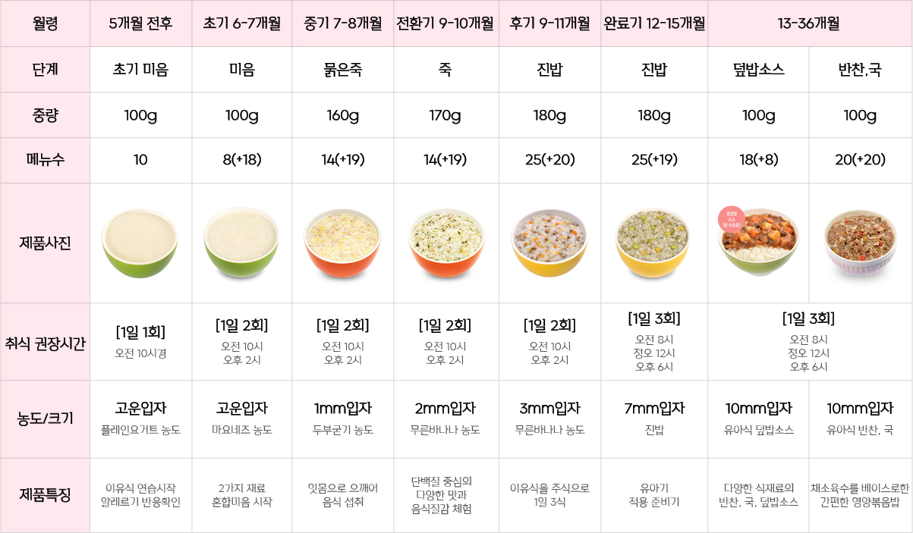

이유식가이드
이유식은 일반적으로 생후 5개월 이상이 되고,
출생 시 체중의 2~2.5배인 7kg 전후가 되었을 때
시작하세요!
아기들은 이유식을 먹으며 다양한 식재료의 맛, 색감, 향을 경험하고 음식을 씹는
행동으로 저작기능이 발달하며, 뇌의 자극을 주어 두뇌발달에도 도움이 됩니다.
이 시기는 평생 건강을 다지고 만성질환의 위험을 줄이는 최적의 시기입니다.
팜투베이비 이유식으로 다양한 식재료 경험과 골고루 먹는 습관을 만들고
평생 건강의 기초를 형성해 주세요.

유아식가이드
맵고 짠 자극적인 음식은
아이의 신장에 부담이 가요!
돌 이후 시기에는 미각이 완벽하게 형성되어 있지 않고 신장의 기능도 어른에 비해
1/6 수준밖에는 되지 않아 맵고 짠 자극적인 음식은 아이의 신장에 부담을 줍니다.
또한 아이들은 어른에 비해 몸집만 작은 것이 아니라 저작능력이나 소화 기능이
부족하여 어른반찬보다 간을 적게 한 후 체계적인 식단으로 올바른 식습관을
형성해 주시는게 좋습니다.